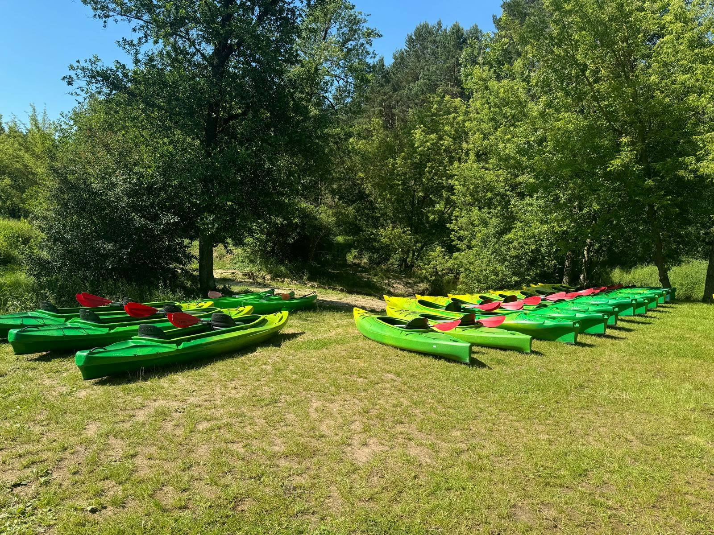
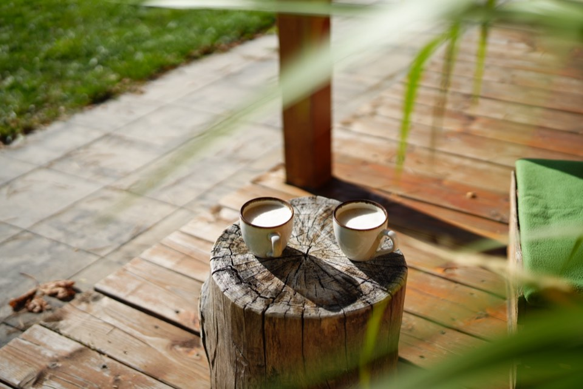

Marzysz · województwo świętokrzyskie
Kajakiem
do Sauny
Spokojne miejsce blisko rzeki i natury – tu łatwo zwolnić tempo i odpocząć po swojemu.
Aktualnie w Marzyszu
Sprawdź, co możesz u nas przeżyć.

Poznaj nas
Marzysz leży w województwie świętokrzyskim, blisko rzeki. To spokojne miejsce, w którym łatwo zwolnić tempo i na chwilę zapomnieć o codziennym pośpiechu. Przyjedź, by odetchnąć świeżym powietrzem, posłuchać ciszy i spędzić czas po swojemu.
Opinie naszych gości
Zaplanuj swój odpoczynek w Marzyszu
Zadzwoń lub napisz – chętnie pomożemy ustalić termin i szczegóły.